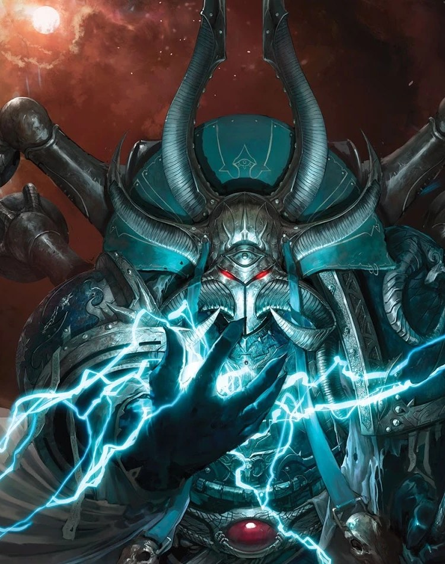
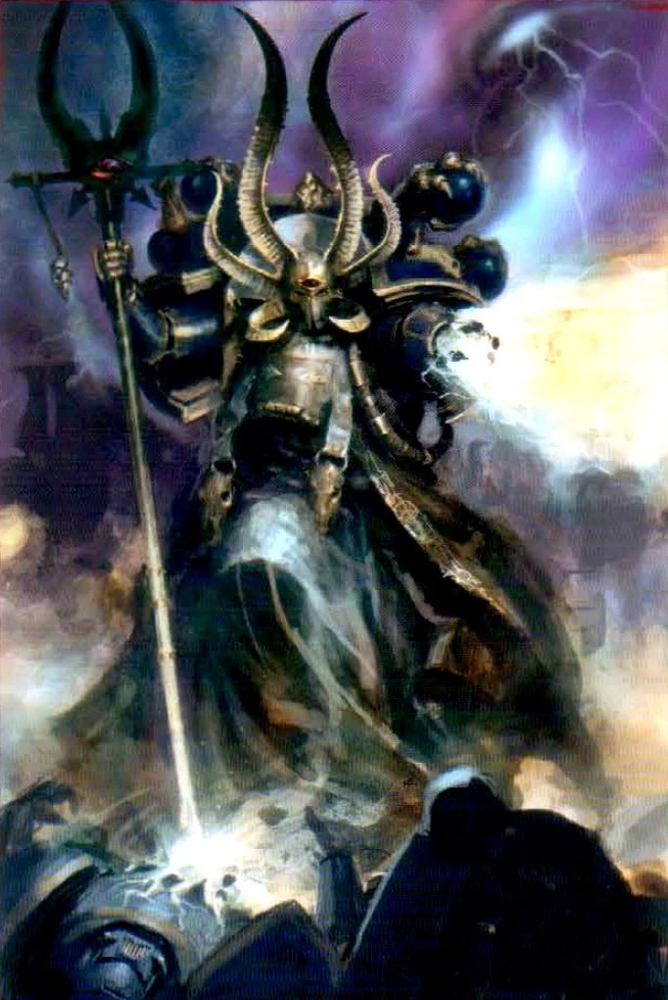

Ahzek Ahriman
| Ahzek Ahriman | |
|---|---|
| Arch-sorcerer of the Thousand Sons | |
 Ahriman in the late 41st millennium, wielding the fire of the warp | |
| Chief Librarian of the Thousand Sons | |
| Tenure | Great Crusade – Horus Heresy |
| Primarch | Magnus the Red |
| Captain of the 1st Fellowship | |
| Tenure | Great Crusade – Heresy |
| Magister Templi of the Corvidae | |
| Tenure | Great Crusade – Heresy |
| Born | M30, the Achaemenid lands of Terra |
| Status | Active; restored to Magnus's favour (M42) |
| Allegiance | Tzeentch and the Thousand Sons; formerly the Imperium of Mankind |
| Relatives | Ohrmuzd (twin brother, died of the flesh-change) |
| Wargear | The Black Staff; inferno bolt pistol; a Disc of Tzeentch |
| Known for | The Rubric of Ahriman; the Harvest of Calliope; the hunt for the Black Library |
Ahzek Ahriman is a Chaos Sorcerer of the Thousand Sons Traitor Legion, held to be the most powerful in that Legion after its daemon primarch, Magnus the Red. A Terran by birth, he was Chief Librarian of the Legion during the Great Crusade, captain of its 1st Fellowship, and a leader of the Corvidae, the cult of seers. He was Magnus's closest adviser at the time of the Burning of Prospero.[1][2]
In exile on the Planet of the Sorcerers Ahriman cast the Rubric of Ahriman, a great spell meant to end the mutation that afflicted the Legion. It reduced almost every warrior without strong psychic gifts to dust sealed in armour, the Rubric Marines. Magnus banished him, and for ten thousand years he wandered the galaxy seeking the knowledge to undo his work, above all the hidden Black Library of the Aeldari.[3]
In 998.M41 Magnus recalled him for the assault on Fenris, and after the opening of the Great Rift Ahriman saw proof, in the power of the Aeldari god Ynnead, that the Rubric could be reversed. In the Era Indomitus he is once again a leading figure of the Legion.[4]
Early life
[edit]Ahriman was born on Terra into the techno-barbarian Achaemenid peoples, whose kings allied with the Emperor in the Unification Wars and were spared much of their destruction. He and his twin brother Ohrmuzd were chosen for the Legions and fought in the first years of the Crusade with the XV Legion.[1]
Within five years the Legion's psychic gifts began to emerge, and with them the flesh-change, a mutation that turned many legionaries into monsters who had to be killed by their brothers. Ohrmuzd was among them. Ahriman wore a pendant of his brother's, a gift from their mother, on his shoulder guard, and the fear of mutation stayed with him for the rest of his life. The finding of Magnus on Prospero halted the flesh-change, and the Legion took the name Thousand Sons.[1]
Great Crusade
[edit]Ahriman became Chief Librarian of the Thousand Sons and captain of the 1st Fellowship. He was a master of the Enumerations, the Legion's discipline for ordering the mind, and Magister Templi of the Corvidae, who read the paths of the future. He trained the remembrancer Lemuel Gaumon in psychic arts at Magnus's direction.[2]
Late in the Crusade Ahriman learned that Magnus had made a bargain with powers of the warp to save the Legion from mutation, and that the flesh-change had begun to return. His trust in his primarch was shaken. At the Council of Nikaea in 001.M31, the Emperor banned sorcery and disbanded the Librarius of every Legion; Ahriman accepted the decree in public while the Legion continued its studies on Prospero.[2]
Horus Heresy
[edit]Prospero
[edit]Magnus foresaw the fall of Horus and, in breaking the Decree to warn the Emperor, destroyed the wards around the Emperor's webway project. The Emperor sent Leman Russ to bring Magnus to Terra; Horus persuaded Russ to destroy Prospero instead. Magnus hid the planet's fate from his own seers and let the attack come. Ahriman fought in the defence of Tizca against the Space Wolves, the Custodes and the Sisters of Silence. At the end Magnus took the survivors through the warp to the Planet of the Sorcerers in the Eye of Terror.[2]

Siege of Terra
[edit]Ahriman came to the Siege of Terra with the Thousand Sons. His forces took part in the first assaults on the Sol System, and their daemons were defeated at the Colossi Gate by the White Scars stormseers. During the Siege he went to the Palace archives to read and preserve what knowledge he could before the end, and spoke there with the iterator Kyril Sindermann. His tarot showed him the daemon card until the death of Horus; when it changed, he understood that the traitors had lost, and he left Terra.[5]
The Rubric
[edit]On the Planet of the Sorcerers the flesh-change returned. Ahriman distilled the knowledge in the Book of Magnus into a spell to purge the mutation and gathered a cabal of the Legion's strongest sorcerers to cast it, among them his former mentor Amon. The Rubric worked. Every legionary with weak or no psychic power was reduced to dust within his armour, his spirit trapped inside; the sorcerers who survived were made stronger. The Legion was left with fewer than a hundred sorcerers set over thousands of automaton warriors.[3]
Magnus came to destroy Ahriman for what he had done to his sons. Thousand Sons accounts say Tzeentch stayed his hand, and Magnus instead banished Ahriman and his cabal from the Planet of the Sorcerers.[3]
Exile
[edit]Ahriman spent the next ten thousand years wandering, at times hidden in other warbands, at times at the head of his own. He sought whatever might let him finish or undo the Rubric. Amon, who had also been exiled, came to command a brotherhood of sorcerers and Rubric Marines, the Brotherhood of Dust, and hunted for Ahriman for centuries. When the two met, Ahriman destroyed him by releasing the energy of the Rubric bound in his flesh, and took his armour and his followers.[3]
The Harvest of Calliope
[edit]Ahriman's raid on Calliope, an archive world, is one of his best-known crimes. He took the planet's knowledge and the memories of its people. An Imperial ship found the world ten years later, its archives emptied and its few survivors unable to remember anything for more than a few seconds.[3]
The Black Library
[edit]For centuries Ahriman sought the Black Library, the Aeldari repository of forbidden lore hidden in the Webway. He reached its threshold more than once and was turned back by its Harlequin guardians. Ordo Malleus analysts warn that if he ever gained the library's full contents he might use them to ascend as a power of the warp in his own right.[3]
Late 41st millennium
[edit]Before the Thirteenth Black Crusade, Magnus summoned Ahriman to the Planet of the Sorcerers for the first time since the Rubric. Ahriman brought back many exiled Thousand Sons, and led them through the webway to Fenris in 998.M41. With Magnus he used the Silver Towers of Tzeentch to draw power from the Fenris System, a psychic harvest that ended with the destruction of the planet Midgardia and fed a great ritual of Magnus whose purpose Imperial scholars still dispute.[6]
During the Black Crusade Ahriman breached the webway twice. On the second occasion he entered through a portal on Etiamnum III and reached a hidden Harlequin world with a great librarium, but was defeated.[3]
Era Indomitus
[edit]After the fall of Cadia Ahriman's agents in the webway brought him word of the Ynnari, Aeldari who serve the god of the dead, Ynnead. He seized their leaders in a battle in the webway. The priestess Yvraine, to buy her freedom, restored a dozen Rubric Marines to life. When the Aeldari escaped, the restored warriors were lost into a chasm, but Ahriman now knew that the Rubric could be undone and who held the power to do it.[4]
Since the opening of the Great Rift he has gathered his forces and turned his foresight on the Drukhari city of Commorragh, which he believes holds the knowledge he seeks. His standing with Magnus has recovered because of his campaigns in the webway and his part in the war on Fenris.[4]
Character and abilities
[edit]Ahriman is a psyker of the highest grade, skilled in telekinesis, divination and the binding of daemons. He is proud and certain of his own reason, and his crimes are those of a man convinced he can save what he loves by knowledge alone. Imperial and Aeldari records describe him differently. To the Aeldari he is a thief of souls; to the Ordo Malleus a lightning rod for daemonic incursions.[3]

Wargear
[edit]- The Black Staff of Ahriman, a force stave that focuses his power.
- An inferno bolt pistol firing warp-touched rounds.
- A Disc of Tzeentch, a daemonic steed on which he flies to battle.
Timeline
[edit]| Date | Event |
|---|---|
| M30[a] | Ahzek Ahriman is born on Terra, into the Achaemenid peoples, alongside his twin brother Ohrmuzd |
| c. 000.M31[b] | Ahriman joins the Thousand Sons after the finding of Magnus the Red on Prospero halts the flesh-change |
| 001.M31 | At the Council of Nikaea the Emperor bans sorcery and disbands the Librarius of every Legion |
| c. 004.M31[c] | Ahriman fights in the defence of Tizca during the Burning of Prospero |
| c. 005.M31[d] | Ahriman casts the Rubric of Ahriman on the Planet of the Sorcerers and is banished by Magnus |
| M31–M41 | Ahriman spends ten thousand years in exile, hunting the knowledge of the Black Library |
| 013–014.M31 | Ahriman takes part in the Siege of Terra and leaves the Sol System after the death of Horus |
| 998.M41 | Magnus recalls Ahriman to the Planet of the Sorcerers and leads the Thousand Sons into the Fenris System |
| 999.M41 | During the Thirteenth Black Crusade Ahriman breaches the Webway twice in his search for the Black Library |
| 999.M41 | The Thousand Sons draw power from the Fenris System at the Silver Towers, and the planet Midgardia is destroyed |
| late 999.M41 | After the fall of Cadia and the opening of the Great Rift, Ahriman seizes Yvraine and the Ynnari leaders in the webway |
| M42 | Ahriman is restored to Magnus's favour and leads the Thousand Sons in the Era Indomitus |
See also
[edit]Notes
[edit]References
[edit]- ^ a b c Liber Primarchus (M32, revised M41). Administratum Archive, Terra.
- ^ a b c d Chronicles of the Heresy (sealed). Logos Historica Verita, Terra.
- ^ a b c d e f g h Liber Haereticus: The Red Sorcerers (rev. M41). Ordo Malleus (sealed).
- ^ a b c Records of the Indomitus Crusade (ongoing). Office of the Lord Commander.
- ^ Records of the Siege of Terra (sealed). Adeptus Custodes Archive, Terra.
- ^ The Wrath of Magnus (999.M41). Fenris Archive, the Fang.